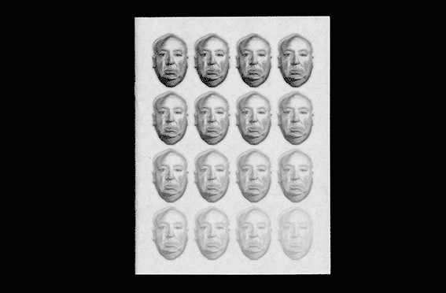

Placeholder is an exploration and index of macguffins.
The title of your project: placeholder.
(alternative word for a macguffin – acts as a place holder in film)
Project Themes: film macguffins, either object/place/location.
Have a link between my website & publication.
Production Themes: B&W, designing my work to match the theme of each film but also have a modern feel to it.
Exploring the use of different compositions & manipulation of text/image.
Showing subtle hints of my project being a macguffin as well.
"A MacGuffin is a plot device used in
films or books that sets the characters into motion and drives
the story.
A MacGuffin is an object, idea, person, or goal that
the characters are either in pursuit of or which serves as
motivation for their actions. Usually, the MacGuffin is revealed in the first act.
A MacGuffin can be a secret instigator for the characters, but the audience does not necessarily need to care about it.
Hitchcock was a master of pure cinema who almost never failed to reconcile aesthetics with the demands of the box-office.
Always formally dressed, wearing a suit on film sets
Inspired the adjective "Hitchcockian" for suspense thrillers
He hated to shoot on location. He preferred to shoot at the studio where he could have full control of lighting and other factors.
This is why even his later films contain special effects composite and rear screen shots.
Distinctively slow way of speaking, dark humor and dry wit, especially regarding murder.

 are.na
are.na